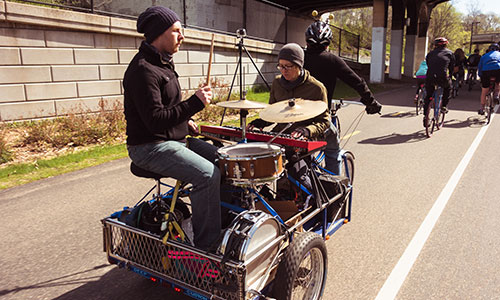

Since 2005, I've recorded 20 major releases across 3 musical projects. For each release, I served as audio engineer, producer, mixer, musician, and graphic designer.
This work has slowed in recent years, but I'm still writing music with my current band as well as collaborating as a session musician or engineer when called to.

The Decayed Realms
An electronic rock duo combining live-performed melody and percussion to craft wordless narratives ranging from the slow and pensive to the cinematic and intense.
Clidesfeld
An alternative rock and electronic music project filled with snappy criticism, introspection, and optimism that grew to host several collaborators.
Def & Dum
Bluesy folk music carrying a darkness and unflinching honesty, crafted in bus terminals, city corners, and stranger's homes across the country.